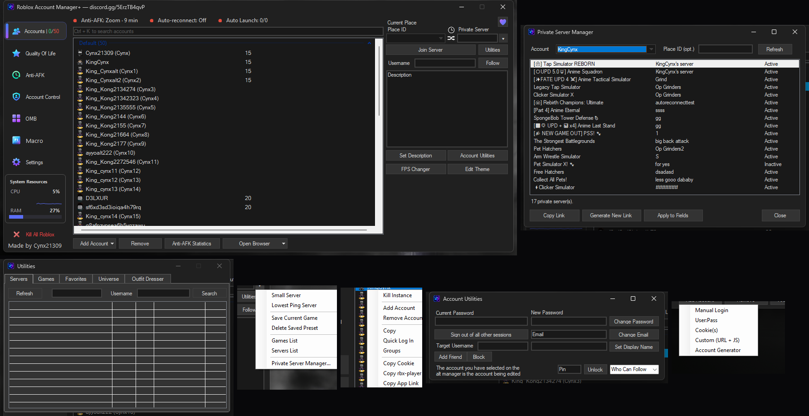
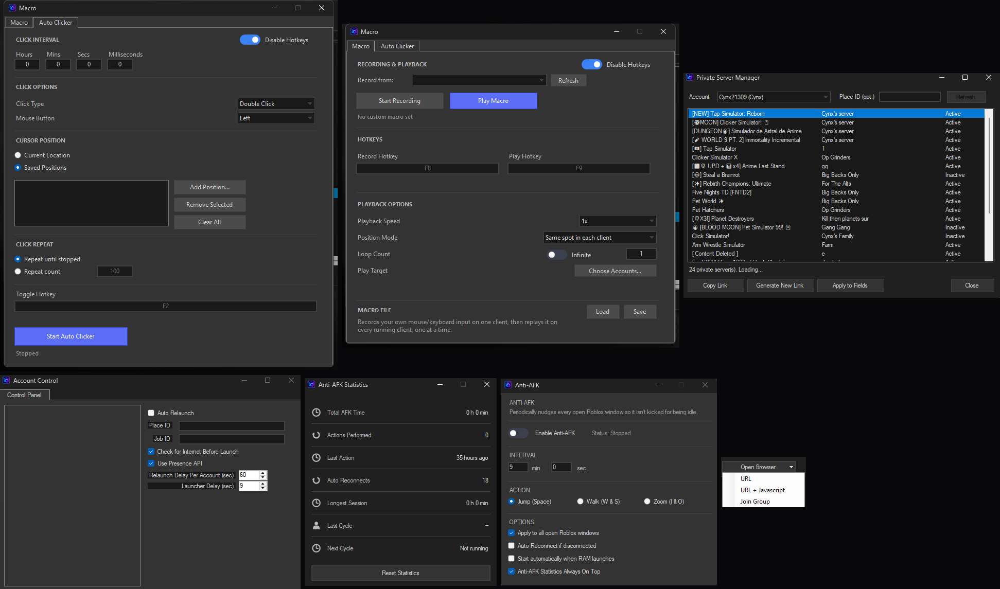
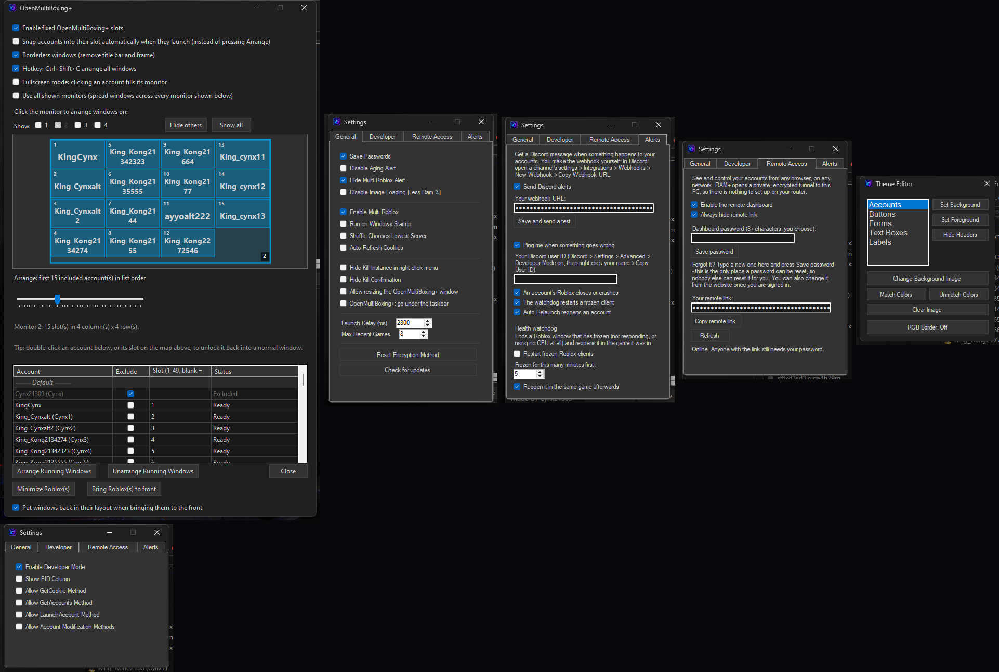
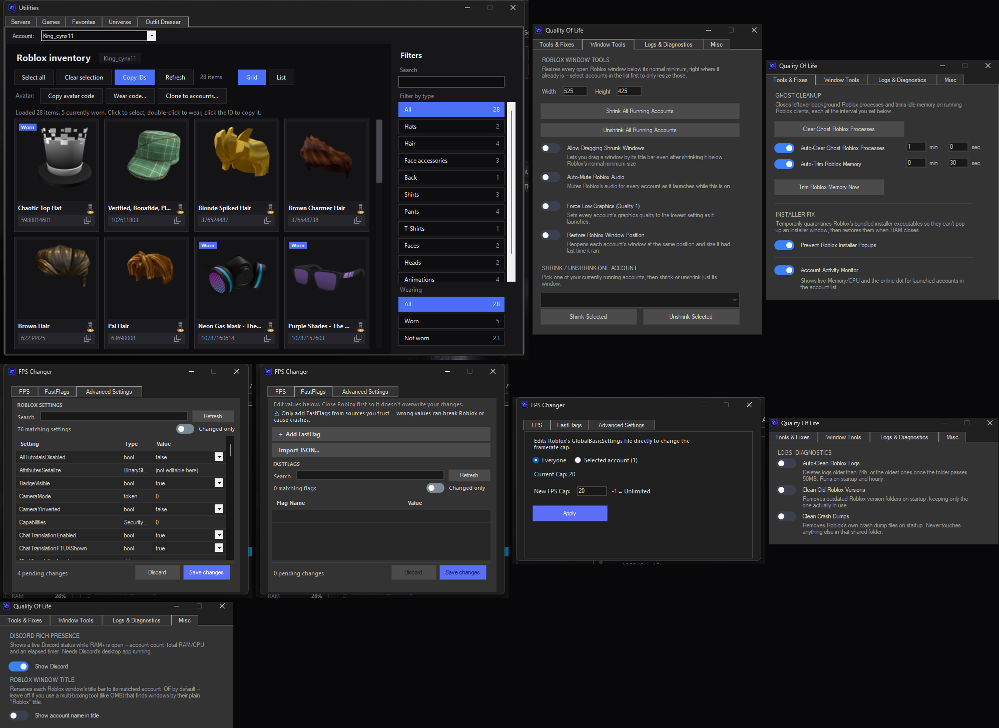
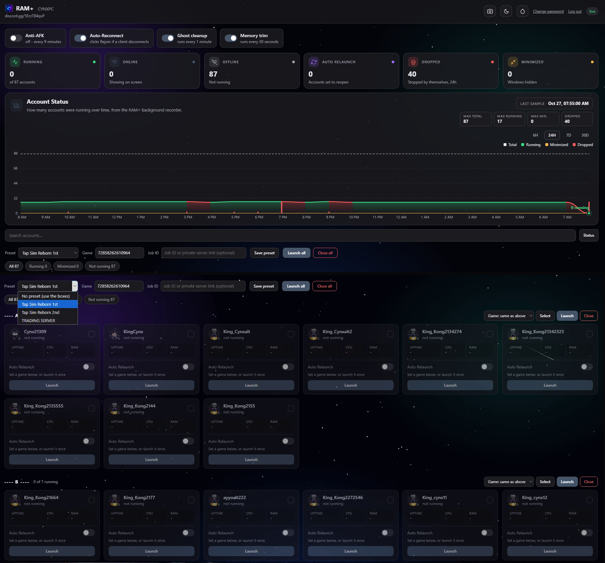
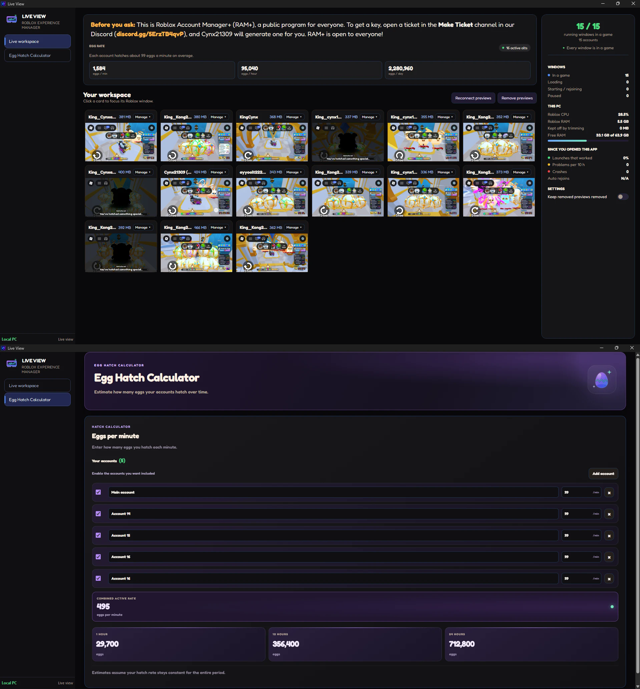

Run, automate, and keep an eye on dozens of Roblox accounts from one app — multiboxing, Anti-AFK, macro playback, live previews, and a remote dashboard. Free, for Windows.
Accounts, automation, multiboxing, theming, the remote dashboard, and Live View.






Every core feature, at a glance.
Launch into a Place ID, a specific server, or a private server link — tick several accounts to launch them one after another, with saved presets.
Built-in multiboxing with a fixed-slot grid, up to 49 slots, auto layout, and drag-to-swap — no separate third-party tool.
Keeps sessions alive with automatic retries, auto-reconnect through disconnect dialogs, and a live statistics window.
A real-time preview tile for every running account's window in one place, plus an Egg Hatch Calculator across all of them.
Record real mouse/keyboard input on one account and replay it across every other running account via real input injection.
A password-protected website built into RAM+ — live account tiles and stats, launch/close from anywhere, no port forwarding.
Colors, borders and backgrounds for every part of the UI, auto-recolor from a background image, animated RGB border.
Ghost process cleanup, memory trimming, FPS cap/override, a FastFlags editor, Discord Rich Presence, live resource monitoring.
Not a full code audit — just what sets RAM+ apart from the bare-bones alt managers floating around.
| Feature | RAM+ | Basic managers |
|---|---|---|
| Live Memory/CPU per account | Yes | No |
| Built-in multiboxing grid | Yes | Usually a separate tool |
| Live View — real preview of every window | Yes | No |
| Macro playback across accounts | Yes | No |
| Anti-AFK with statistics window | Yes | No |
| Remote web dashboard | Yes | No |
| Full theme editor + auto-recolor | Yes | No |
Full breakdown, including the comparison against the original Roblox Account Manager, is in the README.
Yes — the download is free. See the latest release.
Nowhere but your own disk, encrypted, and Roblox's official endpoints when the app checks a session or launches a game — the same as your browser does. No telemetry, no external server.
Yes — that's the whole point. Launch as many accounts as you want side by side, optionally arranged with the built-in multiboxing grid.
Yes — RAM+ checks for a new version on startup and asks before downloading and installing it. Nothing updates without your say-so.
RAM+ started as a fork of the original Roblox Account Manager and kept building from there — it's a separate, actively developed project with a much larger feature set. See the full comparison.